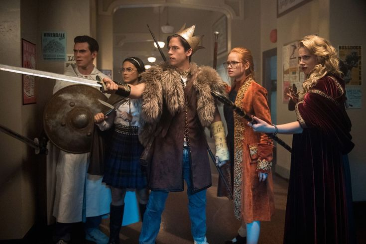

Temporada 1: O Mistério de Jason Blossom
A primeira temporada de "Riverdale" começa com a morte misteriosa de Jason Blossom, o que desencadeia uma investigação liderada por Betty Cooper, Archie Andrews, Jughead Jones e Veronica Lodge. Enquanto os personagens principais tentam descobrir a verdade por trás da morte de Jason, segredos obscuros da cidade começam a vir à tona. A temporada foca em temas como amizade, lealdade e traição. No final, descobre-se que Clifford Blossom, pai de Jason, é o responsável pelo assassinato do próprio filho para esconder o envolvimento da família no tráfico de drogas.
Temporada 2: O Capuz Negro
A segunda temporada é marcada pela presença de um serial killer chamado "Capuz Negro" (Black Hood) que aterroriza Riverdale. O assassino alega estar limpando a cidade dos pecadores e faz vítimas ao longo da temporada. Betty descobre que o Capuz Negro é, na verdade, seu pai, Hal Cooper. Além disso, a temporada explora o envolvimento de Archie com Hiram Lodge, pai de Veronica, e seu crescente poder sobre Riverdale. A guerra entre as famílias e a ascensão das Serpentes do Sul (Southside Serpents) também são pontos centrais.
Temporada 3: O Rei Gárgula e a Fazenda

A terceira temporada mergulha no misticismo com a introdução de um jogo mortal chamado Gryphons & Gargoyles, que leva a série de assassinatos e eventos estranhos. Jughead e Betty investigam o jogo, que parece estar ligado ao passado sombrio dos pais dos adolescentes. A Fazenda (The Farm), um culto liderado por Edgar Evernever, também se torna uma ameaça, atraindo Alice Cooper e outros cidadãos de Riverdale. A temporada termina com Jughead desaparecido e Betty, Archie e Veronica se comprometendo a nunca revelar o que aconteceu.
Temporada 4: O Assassinato de Jughead
.jpeg)

A quarta temporada começa com a morte de Fred Andrews (interpretado por Luke Perry, que faleceu na vida real), levando a um episódio de homenagem emocional. A temporada foca em torno de uma misteriosa conspiração contra Jughead, que leva à sua suposta morte. Betty, Archie e Veronica são suspeitos, mas é revelado que tudo fazia parte de um plano para desmascarar os Stonewall Preps, um grupo de estudantes de elite envolvidos em crimes hediondos. A temporada também mostra a transição dos personagens para o último ano do ensino médio e sua preparação para o futuro.
Temporada 5: Saltos Temporais e Novos Começos
.jpeg)
.jpeg)
A quinta temporada começa com os personagens concluindo o ensino médio e, em seguida, dá um salto de sete anos para o futuro, onde todos estão separados e seguindo caminhos diferentes. Archie retorna a Riverdale depois de servir no exército, apenas para descobrir que a cidade está em ruínas sob o controle de Hiram Lodge. A temporada foca na tentativa dos personagens de salvar Riverdale de sua destruição iminente. Betty trabalha como agente do FBI e enfrenta um novo assassino em série, enquanto Jughead lida com bloqueio criativo e problemas com álcool.
Temporada 6: O Multiverso e o Sobrenatural
.jpeg)
A sexta temporada introduz elementos sobrenaturais na série, começando com um universo alternativo chamado "Rivervale", onde eventos bizarros e sombrios ocorrem. Esta temporada é dividida em duas partes: a primeira lida com os acontecimentos em Rivervale, e a segunda retorna a Riverdale, onde os personagens enfrentam novas ameaças sobrenaturais, incluindo bruxaria e o retorno de Cheryl Blossom como uma bruxa poderosa. A temporada explora temas de poder, sacrifício e o confronto entre o bem e o mal.
Temporada 7: O Retorno às Origens
.jpeg)
.jpeg)
A sétima e última temporada leva os personagens de volta ao passado, especificamente para os anos 1950, onde eles precisam lidar com uma nova realidade e tentar entender como chegaram lá. A temporada mistura nostalgia com um encerramento emocional para as histórias de cada personagem. Ao longo da temporada, eles enfrentam seus medos e arrependimentos, culminando em um final que reflete sobre o crescimento pessoal e as escolhas feitas ao longo da série.